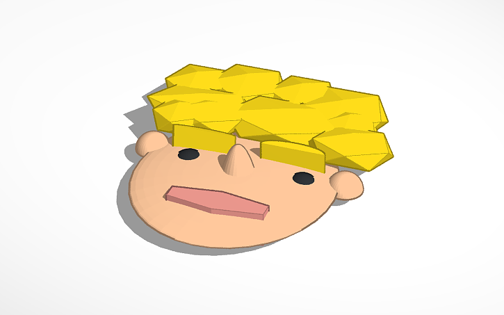
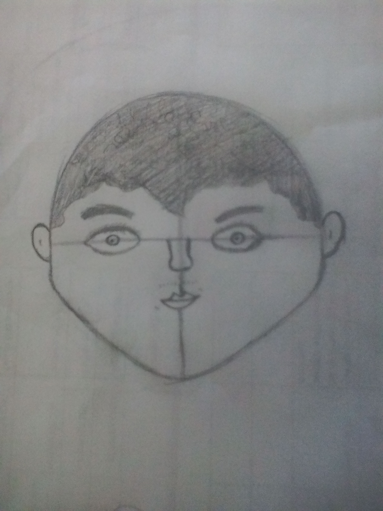
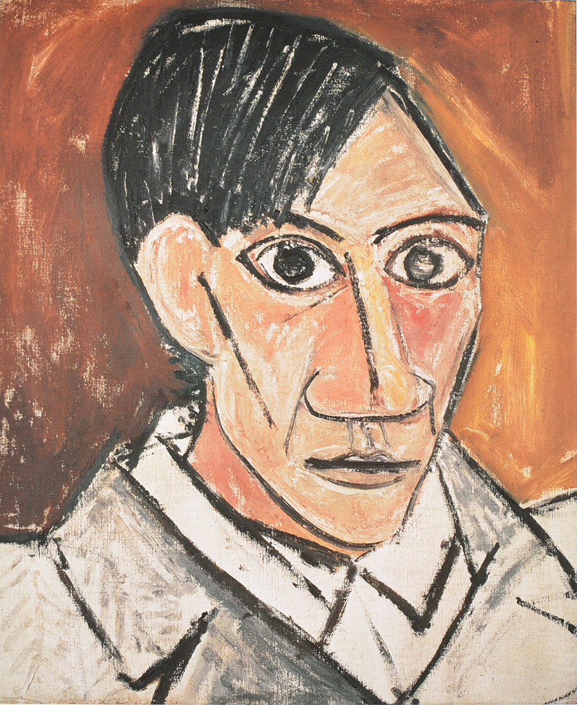

Autorretrato en tinkercad
Este retrato lo realice en tinkercad usando figuras gemoetricas que introduje en el primer post. usando circulos,medias esferas,rectangulosentre otras

Autorretrato a lapiz
Realice este dibujo para la estructura de tinkercad. hice este dibujo usando figuras geometricas y despues realizarlo en la plataforma tinkercad para hacerlo a mejor estructura geometrica

Autorretrato Famoso
Este autorretrato representa la fase de transición, en la cual es patente el carácter poco naturalista de los rasgos faciales, como la desproporcionada nariz y los ojos, que fueron descritos por Rousseau, el Aduanero, como semejantes a los de una máscara tribal. La obra fue realizada por Picasso después de haber estudiado una estatuilla comprada en un bistrot de Bougival.
